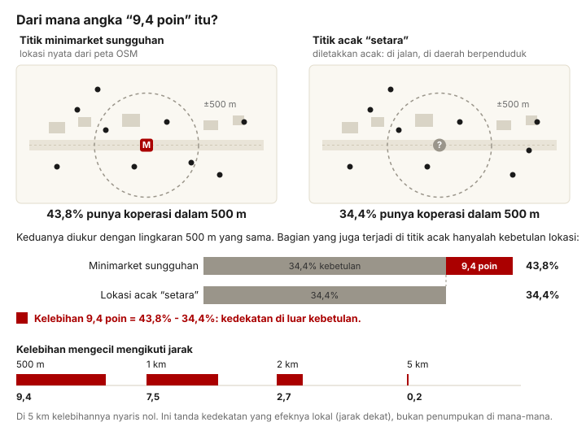

Temuan · Bab 2
“Dibangun berdekatan dengan minimarket yang sudah ada.” Kedekatan jarak ini memang nyata, tapi sedang; kompetisi dagang tidak bisa dibuktikan dari data yang kami miliki.
Tuduhan kedua: program membangun koperasi di desa yang sudah punya minimarket modern (Indomaret, Alfamart, dan sejenisnya), tumpang tindih yang boros. Yang bisa kami ukur dengan tepat adalah kedekatan fisik. Yang tidak bisa kami buktikan adalah kompetisi dagang atau niat.
Kedekatan dengan minimarket: nyata, tapi sedang dan terbatas
Menghitung “berapa minimarket di dekat koperasi” saja tidak cukup. Baik minimarket atau koperasi sama-sama sering berada di jalan utama daerah berpenduduk, jadi kedekatan itu bisa jadi adalah kebetulan belaka. Karena itu kami membandingkan setiap minimarket dengan lokasi acak yang setara: sama-sama di jalan, sama-sama di daerah berpenduduk.
Hasilnya: setelah faktor itu diimbangi, sebuah minimarket yang terpetakan sekitar 9,4 poin persentase lebih mungkin memiliki koperasi dalam 500 m dibanding lokasi acak yang sebanding. Kelebihan itu menghilang pada jarak 2 km. Angka ini bertahan saat tingkat data ritel diubah-ubah, jadi tidak bergantung pada di mana batas format digambar.

Perlu dicatat: angka ini adalah batas bawah. Peta yang kami pakai hanya memuat sebagian minimarket Indonesia (13,8% gerai Indomaret, 10,9% Alfamart), dan kami bahkan belum memasukkan warung dan toko kelontong kecil, justru ritel yang paling dekat dengan desa. Kehadiran adalah bukti; ketidakhadiran bukan.
Koperasi yang saling menumpuk: klaster
Bagaimana dengan koperasi terhadap sesama koperasi? Kami menghitung jarak terdekat setiap koperasi ke koperasi lain:
| Ada koperasi lain dalam… | Bagian koperasi |
|---|---|
| 500 m | 4,6% |
| 1 km | 22,2% |
| 2 km | 58,9% |
| 5 km | 91,3% |
Dua hal yang perlu diingat. Pertama, 91% koperasi punya saudara dalam 5 km. Itu konsekuensi wajar dari program “satu koperasi per desa” di Indonesia yang padat, bukan bukti penumpukan. Kedua, pada ujung yang ketat ada jejak nyata: 1 dari 5 koperasi punya koperasi lain dalam 1 km, dan ada 2.513 petak 1 km berisi dua koperasi atau lebih (maksimum 17 dalam satu petak).
Apakah penumpukan merugikan kinerja? Ternyata tidak terukur
Dugaan yang kami uji: koperasi yang berdekatan saling berebut warga, jadi hasil per koperasi lebih rendah. Kenyataannya, koperasi yang berbagi petak melaporkan transaksi sama seringnya dengan yang terpencil (4,5% vs 3,7%), dan ukuran kelompok tidak berkorelasi dengan nilai per koperasi (ρ ≈ 0). Dugaan itu tidak didukung. Ini hasil nol yang jujur: mengingat data dagang 97% kosong, “tidak ada penalti” adalah pernyataan terkuat yang diizinkan data, bukan ukuran ketiadaan kompetisi.
Barang yang dijual memang barang yang sama
Konteks ini penting: lebih dari tiga perempat nilai penjualan yang dilaporkan program adalah beras dan minyak goreng, dengan pupuk sebagai barang utama lainnya, persis barang yang dijual minimarket dan warung desa. Jadi secara produk, koperasi ini memang masuk pasar yang sama. Tapi itu deskripsi peran, bukan bukti kanibalisasi.
Vonis bab ini
Kedekatan dengan ritel modern nyata tapi sedang, sekitar 9,4 poin dalam 500 m dan hilang pada 2 km, sementara tumpang tindih antar-koperasi nyata tapi tanpa penalti kinerja yang terukur. Yang dibutuhkan tuduhan publik, yaitu bukti koperasi merebut pelanggan minimarket atau program sengaja dibangun di atasnya, tidak dapat dibuktikan dari data ini: data dagang 97% kosong, dan kedekatan juga bisa berarti keduanya mengejar titik ramai desa yang sama. Tumpang tindih dengan koperasi lama (KUD dan sejenisnya) tidak bisa diuji sama sekali: tidak ada daftar koperasi sebelum program ini.